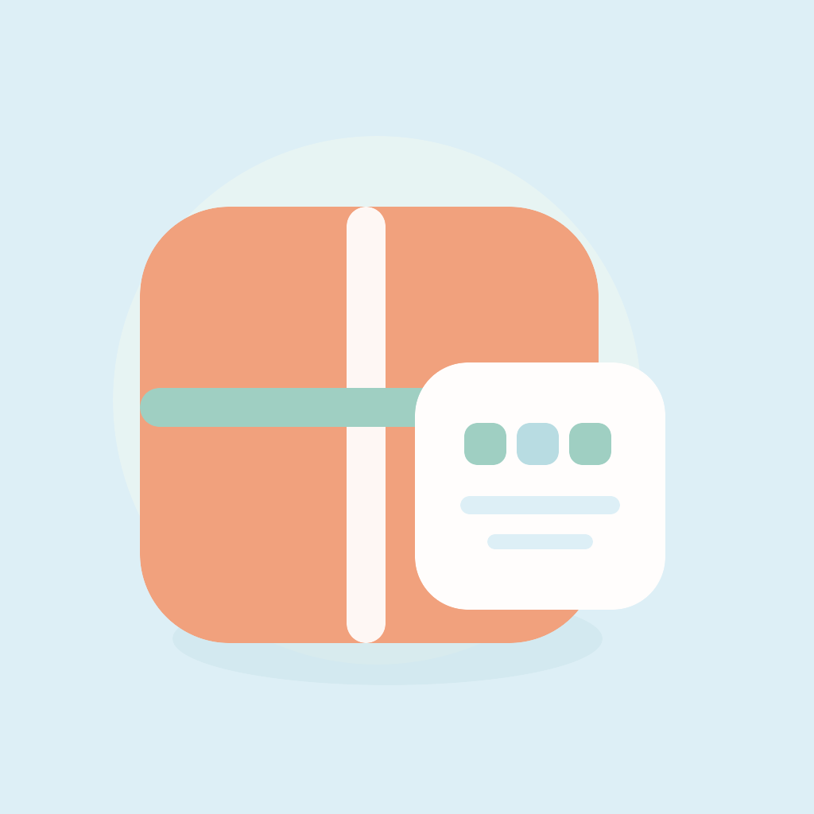
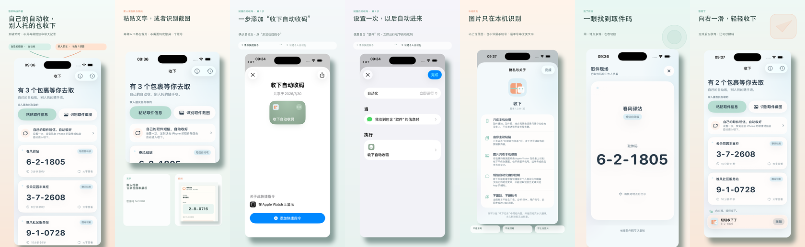

自己的短信，自动进来
通过 iPhone“快捷指令”设置一次，进入“信息”App 的取件短信就能自动整理成待取卡片。
本地优先的 iPhone 取件码收件箱
设置短信自动收码，或粘贴文字、导入截图。 打开 App，取件码和地点一眼就能找到。
中国大陆 App Store · 免费 · iOS 17 及以上

自己的自动收，别人托的也收下
通过 iPhone“快捷指令”设置一次，进入“信息”App 的取件短信就能自动整理成待取卡片。
复制聊天里的文字，或一次选择多张连续物流截图。本机合并识别并去除重复取件码，不上传图片和通知。
轻点卡片进入大字取件模式，同一地点多件可以连续查看；需要别人代取时，也能把多件批量交给对方。
1.2.4 · 测试准备中
以下为新版功能，尚未正式发布。
小号、中号组件展示待取码与地点，锁屏组件显示件数。自行添加，点击回到收下。
主动开启后跟随待取信息更新，取完收起。默认关闭，到期后再次打开 App 恢复。
默认最近 30 天，也能查看全部。设为待取或确认删除，无需归档，不自动清理。
从收到消息，到把包裹带回家
“收下”不是另一个购物平台，也不把取快递变成新的待办。它只在包裹已到、尚未取回的这段时间里，把你真正需要的取件信息放在手边。

隐私是默认设置
收下
免费，仅提供 iPhone 版本，当前在中国大陆 App Store 上架。